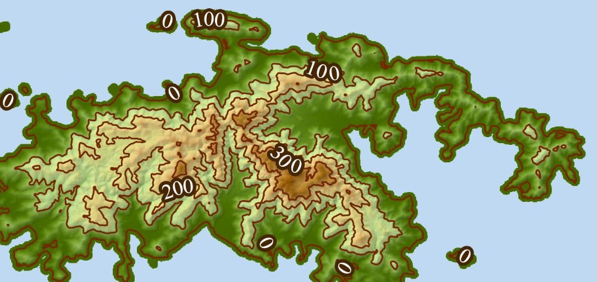
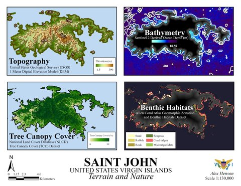
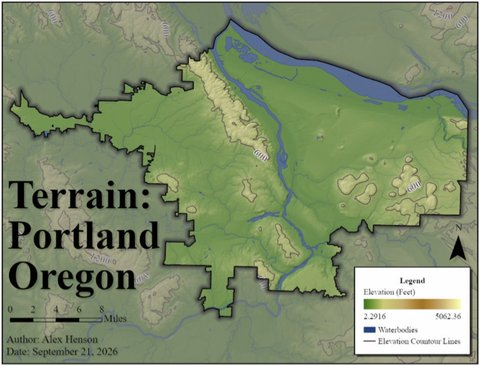
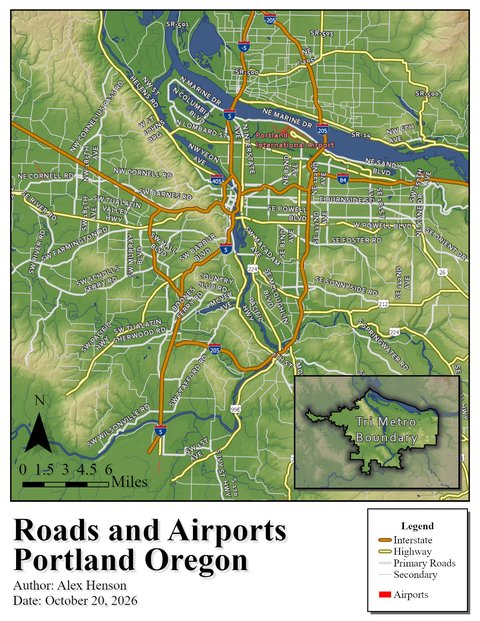

Alex Henson GIS Portfolio
Maps I made at the University of North Carolina at Chapel Hill: terrain, coastlines and seafloor, and the roads that run between them.
View projects
About
I'm a [year] at UNC-Chapel Hill studying [major]. I like maps that explain something physical: how high the ground is, how deep the water gets, and where a road can and can't go.
Most of my work so far is in ArcGIS Pro, built from elevation models, satellite imagery, and land cover data. After graduation I want to [your goal, for example work in environmental planning or go to graduate school in geography].
GIS skills
- ArcGIS Pro: layout, symbology, and labeling
- Elevation models, hillshades, and contours
- Satellite imagery (Sentinel-2) and land cover data
- [Python, R, or other tools you've used]
Projects
-

Saint John: Terrain and Nature
Elevation, ocean depth, tree canopy, and seafloor habitat of St. John, U.S. Virgin Islands, in four panels.
-

Portland Terrain
Elevation, rivers, and contours inside the Tri-Metro boundary.
-

Portland Roads and Airports
Interstates, highways, local roads, and Portland International Airport over the region's terrain.
Contact
Email your-email@unc.edu
GitHub github.com/alexchenson